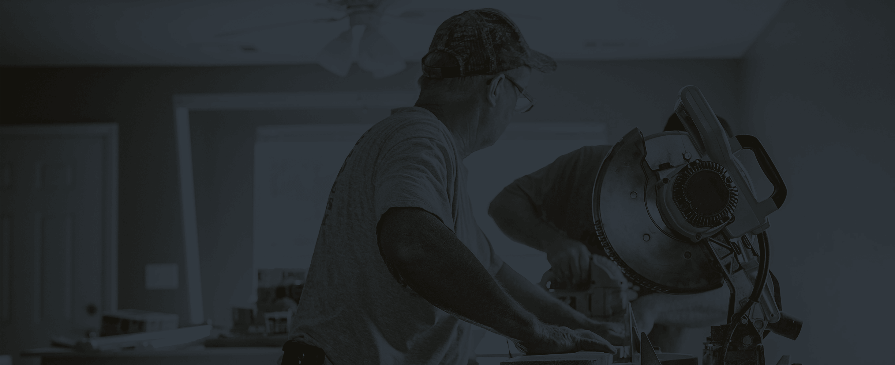

Trollhättans Stad
2018 – Gratisprojekt för Trollhättans Stads projekt Alla behövs i jobb. Grafik skapad med Adobe Illustrator och Photoshop.
Trollhättans Stad har nyligen startat projektet Alla behövs i jobb som jag gjorde detta gratisjobb för. Bilderna kommer att användas på kommunens hemsida och sociala medier för att marknadsföra kampanjen. Jag skapade även projektets logotyp som möjligtvis kommer att användas på tröjor som används i samband med projektet.